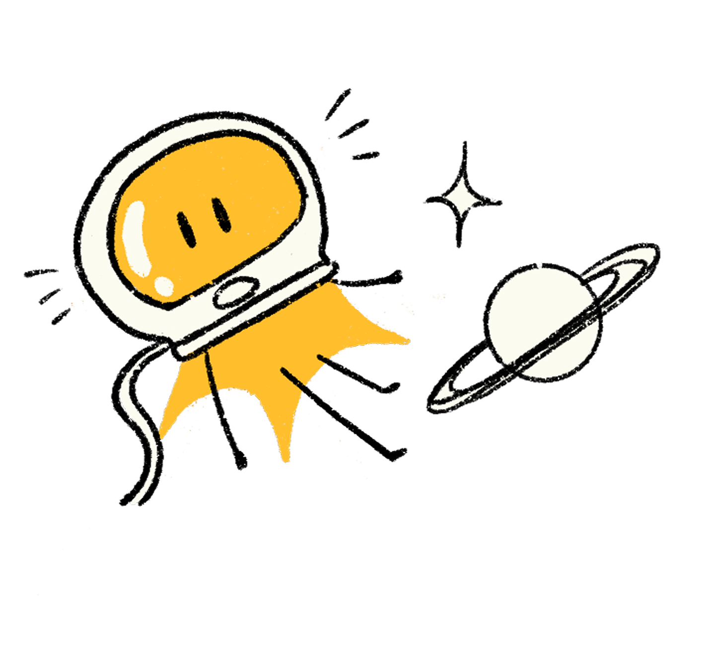

~35 minuti — dalla rappresentazione del significato alla ricerca intelligente

★ RAPPRESENTAZIONE
Trasformare parole in numeri
Gli embedding: una mappa del significato
Un embedding è una lista di numeri (un vettore) che rappresenta il significato di un testo¹
Centinaia o migliaia di dimensioni (es. 1536 per OpenAI, 3072 per Google Gemini)²
Ogni dimensione cattura un aspetto del significato
gatto
cane
leone
Animali
auto
treno
aereo
Veicoli
Come una mappa dove le parole formano quartieri: nel quartiere "animali" trovate gatto e cane vicini, lontani dal quartiere "veicoli".
¹ Google, 2025 ² OpenAI / Google, 2025
★ CONNESSIONE
Dagli LLM agli embedding
Gli embedding non sono separati dai modelli — ne sono il cuore
1
Token
La parola viene spezzata in token (come visto nel Blocco 3)
↓
2
Embedding iniziale
Ogni token diventa un vettore grezzo — una posizione iniziale nello spazio¹
↓
3
Layer Transformer (×N)
Ad ogni layer, l'attenzione aggiorna il vettore guardando il contesto. Il vettore si muove nello spazio, avvicinandosi al significato contestuale²
↓
4
Embedding finale
L'output dell'ultimo layer è un embedding raffinato, ricco di contesto
💡 Un modello di embedding dedicato è un Transformer addestrato apposta per produrre vettori ottimali per la ricerca semantica — è un "cugino specializzato" degli LLM.
¹ Dremio, 2025 ² Stack Overflow Blog, 2023
★ GEOMETRIA
Le direzioni catturano relazioni
L'aritmetica del significato
re − uomo + donna ≈ regina
Parigi − Francia + Italia ≈ Roma
⚠️ Questa illustrazione viene dagli embedding statici (word2vec, 2013). Il principio è reale — le direzioni nello spazio catturano relazioni semantiche — ma non è una formula esatta.¹
¹ Mikolov et al., 2013 / critiche successive
★ TIPOLOGIE
Non tutti gli embedding sono uguali
Tre generazioni di rappresentazioni
📌
Statici
2013–2017
Un vettore fisso per ogni parola, indipendente dal contesto
"banco" ha lo stesso vettore sia in "banco di scuola" che in "banco di pesci"¹
🔄
Contestuali
2018–oggi, interni ai modelli
Il vettore dipende dal contesto della frase
"banco" ha vettori diversi nelle due frasi — il Transformer capisce la differenza
📄
Di documento
2020–oggi — il tipo che ci interessa
Un intero paragrafo diventa un unico vettore
Usati per la ricerca semantica e la RAG²
Evoluzione: da parole singole → a contesto → a documenti interi
Gli embedding vivono in spazi con centinaia di dimensioni — impossibili da visualizzare direttamente
Tecniche come t-SNE e UMAP li proiettano in 2D o 3D, preservando le relazioni di vicinanza²
⚠️ Queste proiezioni sono approssimazioni. Le distanze tra cluster non sempre riflettono le distanze reali nello spazio originale.
🔗 Demo live: projector.tensorflow.org — cercate una parola e vedrete i suoi "vicini" nello spazio
¹ Google, 2016 ² van der Maaten & Hinton, 2008 / McInnes et al., 2018
★ IL PROBLEMA
Perché gli LLM non bastano da soli
Tre limiti fondamentali
①
Conoscenza cristallizzata
Il modello sa solo ciò che ha letto durante il training. Niente di dopo, niente di interno alla vostra azienda.
②
Finestra di contesto limitata
Non potete incollare migliaia di documenti nel prompt. Anche con 200K token, serve selezionare.
③
Allucinazioni
Senza documenti di riferimento, il modello potrebbe inventare (ricordate il Blocco 3).¹
Serve un modo per dare al modello le informazioni giuste, al momento giusto, da fonti verificabili. → Questo è RAG.
¹ Rimando interno — Blocco 3, slide 3.10-3.11
★ LA SOLUZIONE
RAG — Retrieval-Augmented Generation
Consultare gli appunti prima di rispondere
R
Retrieve
Cerca nei tuoi documenti le informazioni rilevanti alla domanda, usando la ricerca semantica (embedding)
→
A
Augment
Inserisci i frammenti trovati nel contesto del modello come materiale di riferimento
→
G
Generate
Il modello genera la risposta basandosi sulla sua conoscenza + i documenti forniti
📖 Come uno studente che, prima di rispondere a un esame, può consultare i suoi appunti. Non deve ricordare tutto a memoria — basta che sappia dove cercare e come usare ciò che trova.¹
¹ Lewis et al., 2020 — Facebook AI Research
★ PIPELINE
Come funziona in pratica
I 6 passi della pipeline RAG
①
📄
Ingest
Raccogli e pulisci i documenti (PDF, pagine web, database)
②
✂️
Chunking
Dividi in frammenti gestibili (400-512 token con overlap)¹
③
🔢
Embedding
Trasforma ogni chunk in un vettore numerico
↓ ↓ ↓
④
🔍
Retrieval
Domanda → vettore → trova i chunk più simili²
⑤
📊
Reranking
Ri-ordina per rilevanza con modello specializzato (+33-40%)³
⑥
🤖
Generation
LLM genera la risposta con citazioni alle fonti
⚠️ La qualità di RAG dipende dal retrieval. Documenti sbagliati in input → risposte sbagliate in output. Garbage in, garbage out.